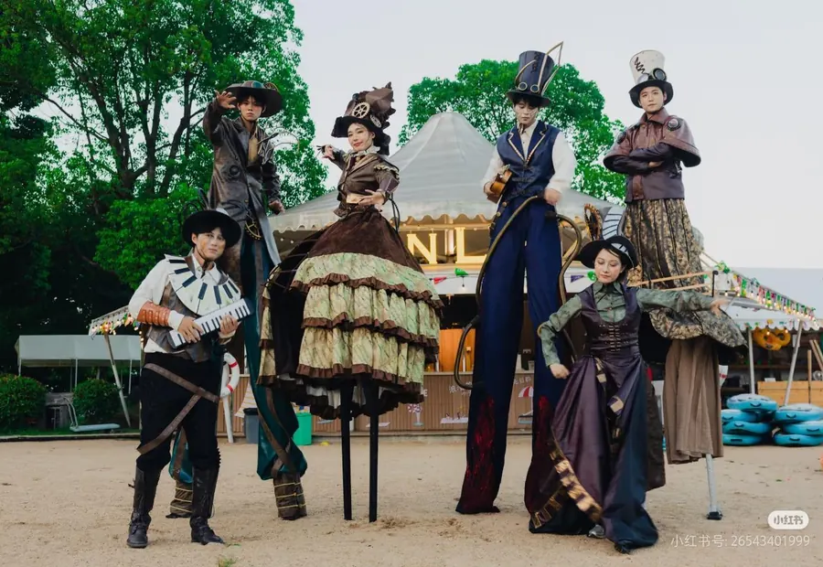

先建立统一的主题故事
景区和乐园的巡游方案通常需要与当地文化、园区IP、节庆主题或夜游故事结合。服装、花车、道具、音乐和演员动作都应该围绕同一个主题展开。只有主题统一，游客才容易理解并形成记忆。
服装道具要适合长时间巡游
文旅项目的使用频率往往高于单次漫画展活动。演员可能每天多场演出，服装道具必须关注耐用性、透气性、重量和可维护性。大型头饰、翅膀、旗帜和手持道具需要控制重心，避免影响长距离巡游。
花车和角色要形成层次
巡游花车承担远距离视觉吸引，角色服装承担近距离互动，道具和小型装置承担拍照传播。彩云端定制会根据道路宽度、转弯半径、观众距离和夜间灯光，规划花车体量、服装色彩和互动点位。
适合扩展的项目内容
- 国潮节庆巡游、民俗主题巡游和城市文化活动。
- 主题乐园角色巡游、儿童剧互动和夜游演艺。
- 景区开园、周年庆、音乐节和文旅商业街活动。
- 商场户外广场、步行街和城市公共空间巡演。
结语
文旅景区与主题乐园巡游服装道具方案，需要把视觉、演员、动线、运营和维护统一起来。彩云端定制可提供创意设计、服装道具生产和项目交付服务。